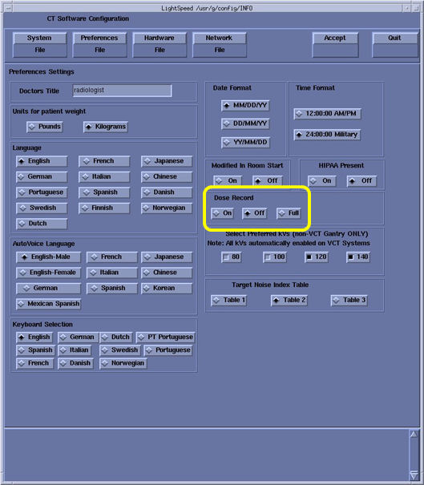

Operating Documentation
Direction 5193574-800, Rev# 22
LightSpeed 7.X Service Methods
Module Version 2.0, Version Date 2/10/15
Operating Documentation |
| Required Persons | Preliminary Reqs | Procedure | Finalization |
|---|---|---|---|
| 1 | 10 mins | 15 mins | 5 mins |
The 2008 DICOM standard includes a new CT Radiation Dose SR UID template that defines how CT scanner vendors should capture CT dose information to save with the study. All systems receiving this DOSE information must support the DICOM X-Ray Radiation SR SOP class.
This procedure demonstrates the Hospital PACS capability to properly receive and store this new DOSE information.
The default setting for the scanner software is to disable these DICOM features. The feature must not be enabled until all of the following conditions have been satisfied:
The Customer asks for the feature to be enabled.
This procedure has been executed and the results demonstrate the feature is supported by the desired Hospital PACS.
| Last revised: | January 20, 2015 |
| Condition | Reference | Effectivity |
|---|---|---|
Approximately 5 minutes of your Customer's time is required to assist in completing the Setup section of this procedure. | - | - |
Ask customer and confirm that the other hospital systems (PACS) supports the following SOP classes. (confirm PACS DICOM Conformance Statement)
| X-Ray Radiation Dose SR Image Storage for “Full” setting. | Tag: 1.2.840.10008.5.1.4.1.1.88.67 |
| Enhanced SR Image Storage for “On” setting. | Tag: 1.2.840.10008.5.1.4.1.1.88.22 |
If both of SOP class are not supported, Dose record setting shall be OFF. The default Dose record setting is Off. In this case, finish the procedure.
Application shutdown, open command window, becomes root user and type “reconfig” to show the reconfig screen.
Set Dose record setting (Full or On) depends on the result of supported SOP class.
Illustration 1: Dose Record Setting

Press Accept button and reboot the system.
Execute an axial scan to create Series 997.
Record the Exam #, that will be used on next step.
The following steps will demonstrate the capability of the PACS equipment to support a specific DICOM SOP class. The system has been already set to use “DICOM X-ray Radiation Dose SR SOP” class (Full) or “DICOM Enhanced SR SOP” class (On).
Send the generated series 997 image to the remote destination.
Examine the scanner’s GEsyslog.
Confirm that the entry containing “.88.67” or “.88.22” does not exist in the GEsyslog. See Illustration 2 for example.
If it exists, that means PACS system does not support “DICOM X-ray Radiation Dose SR SOP” (.88.67) or “DICOM Enhanced SR SOP”(.88.22) and set Dose record setting to “OFF” in Reconfig menu.
Illustration 2: Example GEsyslog

Verify that Series 997 exists and contains images on the destination device.